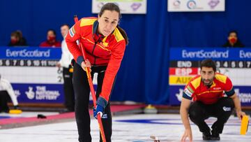

España, a por las medallas en el Mundial de Curling Mixto
El equipo español de curling mixto se enfrenta a una oportunidad única en el Mundial de Curling Mixto 2024. Con un rendimiento sólido en los partidos previos, el equipo busca hacerse con una medalla y seguir posicionando a España en la élite de este deporte. Todos los ojos están puestos en los próximos encuentros, donde la estrategia y el trabajo en equipo serán clave para alcanzar el podio.